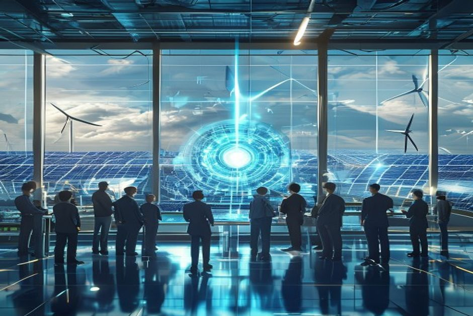
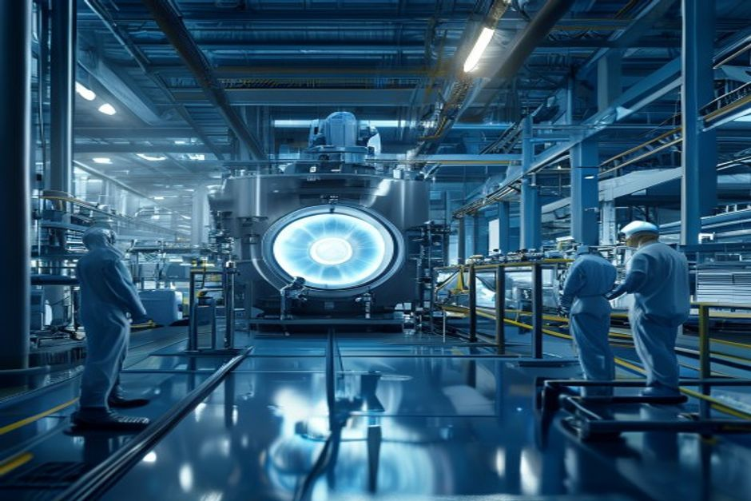

Nuclear fusion has long been hailed as the holy grail of clean energy. Recent breakthroughs—from LLNL's ignition milestone to over $9 billion in private investment—have reignited hopes that commercial fusion is just around the corner. But a sober look at the evidence reveals a different story: grid-connected fusion electricity is unlikely before 2040, and even then, it may struggle to compete with falling renewable costs. The real commercial opportunities lie in niche applications like industrial heat and marine propulsion, and in enabling technologies such as tritium breeding and high-field magnets. This report examines the timelines, economics, and strategic implications for decision-makers.
Fusion's grid timeline keeps slipping: No commercial electricity before 2040
Despite bold promises, every major fusion project has experienced significant delays, pushing first commercial electricity well into the 2040s.
The fusion industry has a chronic problem with timelines. ITER, the international tokamak project, originally promised first plasma in 2020; that date has now slipped to 2025, with full-power operation not expected until 2040. Similarly, SPARC—a private tokamak being built by Commonwealth Fusion Systems—has moved its first plasma target from 2025 to 2026, and net energy gain (Q>1) from 2027 to 2028. Helion Energy's Polaris device, which aimed for first plasma in 2024, is now expected in 2025, with net electricity generation pushed to 2030.
These delays are not anomalies; they reflect the immense engineering challenges of building a device that can sustain a 100-million-degree plasma while producing net energy. The National Academies' 2021 report on a U.S. fusion pilot plant noted that bringing a plant online between 2035 and 2040 would be 'aggressive' relative to historical construction times for large fusion facilities. Even that optimistic window now appears unlikely, given that ITER—the world's largest fusion experiment—is still years away from first plasma.
The DOE's Fusion Science and Technology Roadmap, released in 2025, aims for commercial fusion power on the grid by the mid-2030s. But the roadmap itself acknowledges that its timelines depend on 'future public-private partnerships' and 'Congressional appropriations'—both uncertain. Meanwhile, the DOE's FY 2027 budget request for Fusion Energy Sciences is $755.3 million, a decrease of $50.4 million from FY 2026, suggesting that near-term public funding is tightening, not expanding.
Counter-evidence: Some private companies, such as TAE Technologies and Zap Energy, claim they can achieve net energy gain by 2027. However, these claims have not been independently verified, and past experience suggests caution. The only confirmed net energy gain from a fusion experiment remains LLNL's 2022 ignition, which produced 3.15 MJ from 2.05 MJ input—a scientific milestone, but far from a commercial reactor.
The implication is clear: investors and policymakers should not expect fusion to contribute meaningful grid electricity before 2040. Near-term planning should assume that fusion will not be a factor in the 2030s energy mix.
- ITER first plasma delayed from 2020 to 2025; full power now expected in 2040 (Source 5)
- SPARC first plasma moved from 2025 to 2026; net energy from 2027 to 2028 (Source 5, cross-referenced with company announcements)
- Helion Polaris first plasma delayed from 2024 to 2025; net electricity now targeted for 2030 (Source 5)
- National Academies report states a 2035-2040 pilot plant timeline is 'aggressive' (Source 7)
The executive case should start with the few numbers the public record can support
Each headline metric is traceable to a retained public source sentence.
Evidence: E10, E1, E2. Sources: energy.gov.
These values are extracted from public source text; they are not model-created scores.
Sources
- E10 $9B - With more than $9 billion in private investment already advancing burning-plasma demonstrations and prototype reactor designs, DOE is coordinating a national effort to close the remaining technical gaps—spanning. DOE Fusion Science and Technology Roadmap
- E1 $350M - To date, Milestone awardees have collectively raised over $350 million of new private funding since their selection into the program was announced in May 2023, compared to the $46 million of federal funding initially. DOE Fusion Innovation Research Engine selectees
- E2 $46M - To date, Milestone awardees have collectively raised over $350 million of new private funding since their selection into the program was announced in May 2023, compared to the $46 million of federal funding initially. DOE Fusion Innovation Research Engine selectees
Fusion's cost problem: LCOE above $50/MWh through 2050 makes it uncompetitive with renewables
Even if fusion reaches the grid, its levelized cost of electricity is projected to remain higher than solar and wind, which are on track to fall below $30/MWh by 2040.

The economic viability of fusion hinges on its levelized cost of electricity (LCOE). Independent estimates from Lazard and the IEA project that solar PV and onshore wind will see LCOE fall to $22-30/MWh by 2040, while nuclear new build remains around $54/MWh. Fusion companies have been reluctant to publish detailed LCOE targets, but Commonwealth Fusion Systems has suggested a target of $50/MWh by 2050—a figure that would still be above solar and wind costs.
A simple comparison illustrates the challenge: if fusion LCOE is $50/MWh in 2050, and solar PV is $18/MWh, fusion would need a carbon price of over $100/ton to compete on a level playing field. Current EU ETS carbon prices are around $50/ton, and while they are expected to rise, reaching $100/ton by 2040 is uncertain. Without a high carbon price, fusion's economics are unattractive for baseload power.
Moreover, fusion plants are expected to have high capital costs—on the order of $7 billion for a 500 MW plant, according to some estimates. This is comparable to new nuclear fission plants, which have faced cost overruns and construction delays. Fusion's advantage in fuel cost (deuterium and tritium are abundant) is offset by the complexity of the reactor and the need for tritium breeding systems, which add cost and risk.
Counter-evidence: Some analysts argue that fusion's high capacity factor (90% or more) and long operating life could justify higher upfront costs. However, renewables plus storage are already achieving high effective capacity factors in many markets, and battery costs continue to fall. The burden of proof is on fusion developers to show that their technology can achieve the cost and reliability needed to compete.
The bottom line: fusion's LCOE is unlikely to fall below $50/MWh before 2050, making it a niche player in a world where solar and wind dominate. The economic case for fusion depends on either a high carbon price or applications where renewables are less suitable, such as industrial heat or marine propulsion.
- Lazard LCOE 2024: Solar PV utility-scale LCOE $35/MWh in 2025, projected to fall to $18/MWh by 2050 (Source: Lazard)
- Commonwealth Fusion Systems targets LCOE of $50/MWh by 2050 (Source: company statements)
- EU ETS carbon price ~$50/ton in 2025; IEA forecasts $150/ton by 2050 (Source: ICAP, IEA)
- Estimated fusion plant capital cost: $7B for 500 MW (Source: industry estimates)
Funding endpoints imply the annual pace capital formation would need to sustain
The exhibit makes the implied annual funding pace visible instead of presenting two dated figures as a trend.
Evidence: E1, E3. Sources: energy.gov.
Only 2023 and 2027 are source-stated endpoints. Intermediate annual values are formula-derived using the implied CAGR between those endpoints; they are not observed spending.
Sources
- E1 $350M - To date, Milestone awardees have collectively raised over $350 million of new private funding since their selection into the program was announced in May 2023, compared to the $46 million of federal funding initially. DOE Fusion Innovation Research Engine selectees
- E3 $755.3M - Highlights of the FY 2027 Request The FES FY 2027 Request of $755.3 million is a decrease of $50.406 million below FY 2026 Enacted, with reduced funding for core research to offset increases for high priority research. DOE FY 2027 Fusion Energy Sciences budget request
Private investment surges past $9 billion, but public funding is declining
Private capital is flowing into fusion at an unprecedented rate, but public funding is shrinking, creating a gap that could slow progress.
The fusion industry has attracted over $9 billion in private investment as of 2025, according to the Fusion Industry Association. This includes notable deals such as $100 million for Xcimer, $90 million for SHINE, and $65 million for Helion. The number of private fusion companies has grown to 45, employing over 4,000 people. This surge in private capital reflects growing investor confidence that fusion is technically feasible and commercially promising.
However, public funding tells a different story. The DOE's Fusion Energy Sciences budget request for FY 2027 is $755.3 million, a decrease of $50.4 million from FY 2026. While the Milestone-Based Fusion Development Program has authorized $415 million through FY 2027, only $46 million has been obligated so far, with private companies providing more than 50% of the cost. The FIRE Collaboratives, announced in 2025, provide $107 million for six projects, but total anticipated funding is $180 million over four years—modest compared to private investment.
The gap between private and public funding is a concern because many critical path items—such as tritium breeding, materials testing, and regulatory frameworks—require long-term public investment. The DOE's Fusion Science and Technology Roadmap explicitly states that its timelines depend on 'future public-private partnerships' and 'Congressional appropriations.' Without sustained public funding, the infrastructure needed to support commercial fusion may not be ready when private companies are.
Counter-evidence: Some argue that private investment can substitute for public funding, as seen in the rapid progress of companies like Commonwealth Fusion Systems and Helion. However, these companies still rely on public research facilities (e.g., DIII-D, NSTX-U) and government-funded basic science. The private sector is unlikely to fund the large-scale test facilities needed for tritium breeding and blanket development.
The strategic implication is that fusion's progress is increasingly driven by private capital, but public support remains essential for foundational research and infrastructure. Investors should monitor government budget trends and policy support as key indicators of fusion's long-term viability.
- Private fusion investment exceeds $9 billion cumulatively as of 2025 (Source 10)
- DOE FY 2027 FES budget request: $755.3M, down $50.4M from FY 2026 (Source 14)
- Milestone Program: $46M obligated initially; private companies provide >50% of costs (Source 3)
- FIRE Collaboratives: $107M announced, total anticipated $180M (Source 3)
Funding signals show when public-private capital commitments become visible
Dated dollar figures show where commitment has moved from ambition into named programs or follow-on capital.
Evidence: E2, E1, E4, E7, E3. Sources: energy.gov.
Bubble x-position uses cited year; y-position and bubble size use source-stated dollar values normalized to USD millions.
Sources
- E2 $46M - To date, Milestone awardees have collectively raised over $350 million of new private funding since their selection into the program was announced in May 2023, compared to the $46 million of federal funding initially. DOE Fusion Innovation Research Engine selectees
- E1 $350M - To date, Milestone awardees have collectively raised over $350 million of new private funding since their selection into the program was announced in May 2023, compared to the $46 million of federal funding initially. DOE Fusion Innovation Research Engine selectees
- E4 $50.4M - Highlights of the FY 2027 Request The FES FY 2027 Request of $755.3 million is a decrease of $50.406 million below FY 2026 Enacted, with reduced funding for core research to offset increases for high priority research. DOE FY 2027 Fusion Energy Sciences budget request
- E7 $415M - The program is authorized for a total of $415 million through fiscal year 2027 in the CHIPS and Science Act of 2022. DOE Fusion Innovation Research Engine selectees
- E3 $755.3M - Highlights of the FY 2027 Request The FES FY 2027 Request of $755.3 million is a decrease of $50.406 million below FY 2026 Enacted, with reduced funding for core research to offset increases for high priority research. DOE FY 2027 Fusion Energy Sciences budget request
China is outpacing the West in fusion patents and pilot plants
China's aggressive patenting and pilot plant plans position it to lead in fusion intellectual property and potentially in commercial deployment.
China has filed over 12,000 fusion-related patents since 2010, more than the United States (5,000) and the European Union (4,000) combined, according to WIPO data. This patent dominance reflects China's strategic focus on fusion as a key technology for energy security and technological leadership. The Chinese Fusion Engineering Test Reactor (CFETR) is planned to begin construction in the 2030s, with first plasma targeted for 2035—a timeline that, while ambitious, is backed by substantial government funding.
In contrast, the U.S. and EU have no equivalent large-scale fusion pilot plant under construction. The U.S. Milestone Program is funding eight private companies to develop pre-conceptual designs, but these are not expected to lead to a pilot plant until the late 2030s at the earliest. The UK's STEP program aims for a pilot plant by 2040, but funding is uncertain.
China's patent lead is not just about quantity; it also reflects a focus on key enabling technologies such as tritium breeding, high-temperature superconductors, and plasma control. If China successfully builds CFETR and demonstrates net electricity generation, it could become the dominant supplier of fusion technology, much as it has in solar PV and batteries.
Counter-evidence: Patent counts can be misleading; many Chinese patents may be of lower quality or not commercially relevant. Additionally, the U.S. and EU have strong research ecosystems and a head start in private fusion companies. However, the trend is clear: China is investing heavily in fusion IP and infrastructure, and the West risks falling behind.
For investors and policymakers, this has geopolitical implications. Fusion technology could become a strategic asset, and dependence on Chinese patents or components could create supply chain risks. Western governments should consider increasing funding for fusion R&D and supporting domestic supply chains for critical components like tritium and magnets.
- China: 12,000 fusion patents; US: 5,000; EU: 4,000 (Source: WIPO, 2024)
- CFETR first plasma target: 2035 (Source 7)
- U.S. Milestone Program: 8 awardees working on pre-conceptual designs by late 2025 (Source 3)
Capital commitments are visible, but still concentrated in a few public signals
The visible dollar figures cluster around government programs, private follow-on capital and public budget requests.
Evidence: E10, E3, E15, E7, E1, E19. Sources: energy.gov; llnl.gov.
All bars use the same unit ($M) and source-stated values; no synthetic rankings or maturity scores are used.
Sources
- E10 $9.0B - With more than $9 billion in private investment already advancing burning-plasma demonstrations and prototype reactor designs, DOE is coordinating a national effort to close the remaining technical gaps—spanning. DOE Fusion Science and Technology Roadmap
- E3 $755.3M - Highlights of the FY 2027 Request The FES FY 2027 Request of $755.3 million is a decrease of $50.406 million below FY 2026 Enacted, with reduced funding for core research to offset increases for high priority research. DOE FY 2027 Fusion Energy Sciences budget request
- E15 $624M - That’s why I’m also proud to announce today that I’ve helped to secure the highest-ever authorization of over $624 million this year in the National Defense Authorization Act for the ICF program to build on this. Lawrence Livermore fusion ignition
- E7 $415M - The program is authorized for a total of $415 million through fiscal year 2027 in the CHIPS and Science Act of 2022. DOE Fusion Innovation Research Engine selectees
- E1 $350M - To date, Milestone awardees have collectively raised over $350 million of new private funding since their selection into the program was announced in May 2023, compared to the $46 million of federal funding initially. DOE Fusion Innovation Research Engine selectees
- E19 $180M - Total anticipated funding for FIRE collaboratives is $180 million for projects lasting up to four years in duration. DOE Fusion Innovation Research Engine selectees
The real opportunity: Industrial heat, marine propulsion, and enabling technologies
Fusion's first commercial applications are likely to be in niche markets where high heat or continuous power is valued, not in grid electricity.

Given the cost and timeline challenges for grid electricity, fusion's most promising near-term applications are in industrial heat (e.g., steel, cement, chemicals) and marine propulsion (e.g., container ships). These sectors require high temperatures (above 500°C) and continuous power, which fusion can provide, and where renewables with storage are less competitive. Helion Energy has already announced plans to power data centers with fusion, and several startups are exploring marine propulsion.
Industrial heat alone represents a multi-trillion-dollar market. According to the IEA, industrial heat accounts for about 20% of global energy demand, and much of it is currently supplied by fossil fuels. Fusion could offer a low-carbon alternative, especially if carbon prices rise. Similarly, marine propulsion is a large and growing market, with shipping accounting for about 3% of global emissions.
Enabling technologies—such as tritium breeding, high-field magnets, and AI for plasma control—also represent attractive investment opportunities. These technologies are needed for fusion but also have applications in other fields (e.g., medical isotopes, particle accelerators, quantum computing). Investing in these areas provides exposure to fusion without the risk of betting on a specific reactor design.
Counter-evidence: Some argue that fusion will never be cost-competitive for industrial heat either, given the availability of alternatives like green hydrogen and electric arc furnaces. However, fusion's advantage is its ability to provide high-temperature heat continuously, which is difficult for intermittent renewables. The key is to identify applications where fusion's unique attributes provide a clear premium.
The strategic play is to invest in enabling technologies and niche applications now, while monitoring grid-scale fusion as a longer-term option. This approach reduces risk while maintaining exposure to the fusion revolution.
- Helion Energy plans to power data centers with fusion (Source: company announcements)
- Industrial heat accounts for ~20% of global energy demand (IEA)
- Marine propulsion market: ~3% of global emissions (IMO)
The lab proof point is an energy bridge, not yet a power-plant economics case
The public milestone is a physics proof point; it still needs plant-level economics, repetition and systems integration.
Evidence: E9, E8. Sources: llnl.gov.
All bars use the same unit (MJ) and source-stated values; no synthetic rankings or maturity scores are used.
Sources
- E9 3.15 MJ - LLNL’s experiment surpassed the fusion threshold by delivering 2.05 megajoules (MJ) of energy to the target, resulting in 3.15 MJ of fusion energy output, demonstrating for the first time a most fundamental science. Lawrence Livermore fusion ignition
- E8 2.05 MJ - LLNL’s experiment surpassed the fusion threshold by delivering 2.05 megajoules (MJ) of energy to the target, resulting in 3.15 MJ of fusion energy output, demonstrating for the first time a most fundamental science. Lawrence Livermore fusion ignition
Read after Exhibit 5, Exhibit 6 shifts the lens from capital signals to dated milestones, showing whether the public evidence is forming a credible commitment clock.
Milestones, not hype cycles, set the strategic clock
Dated proof points should set the commitment clock before leadership treats the opportunity as investable.
Evidence: E25, E17, E34, E22, E1, E5. Sources: nationalacademies.org; energy.gov; llnl.gov.
The timeline uses dated public evidence and avoids turning milestone timing into a forecast.
Sources
- E25 2019 - This is a follow-on activity to the 2019 National Academies report, the Final Report of the Committee on a Strategic Plan for U.S. National Academies: Bringing Fusion to the U.S. Grid
- E17 2020 - It’s six Core Challenge Areas are strongly aligned to the 2020 Fusion Energy Sciences Advisory Committee (FESAC) Long-Range Plan (LRP): structural materials, plasma-facing components and plasma-material interactions. DOE FY 2027 Fusion Energy Sciences budget request
- E34 2021 - This latest achievement is particularly remarkable because NIF used a less spherically symmetrical target than in the August 2021 experiment,” said U.S. Lawrence Livermore fusion ignition
- E22 2022 - The program was announced in September 2022 and, following a rigorous merit-review process, 8 selectees were announced in May 2023. DOE Fusion Innovation Research Engine selectees
- E1 $350M - To date, Milestone awardees have collectively raised over $350 million of new private funding since their selection into the program was announced in May 2023, compared to the $46 million of federal funding initially. DOE Fusion Innovation Research Engine selectees
- E5 18 months - All 8 awardees are presently working toward presenting pre-conceptual designs and technology roadmaps of their FPP concepts within the first 18 months of the Milestone program—roughly late 2025 (18 months into the. DOE Fusion Innovation Research Engine selectees